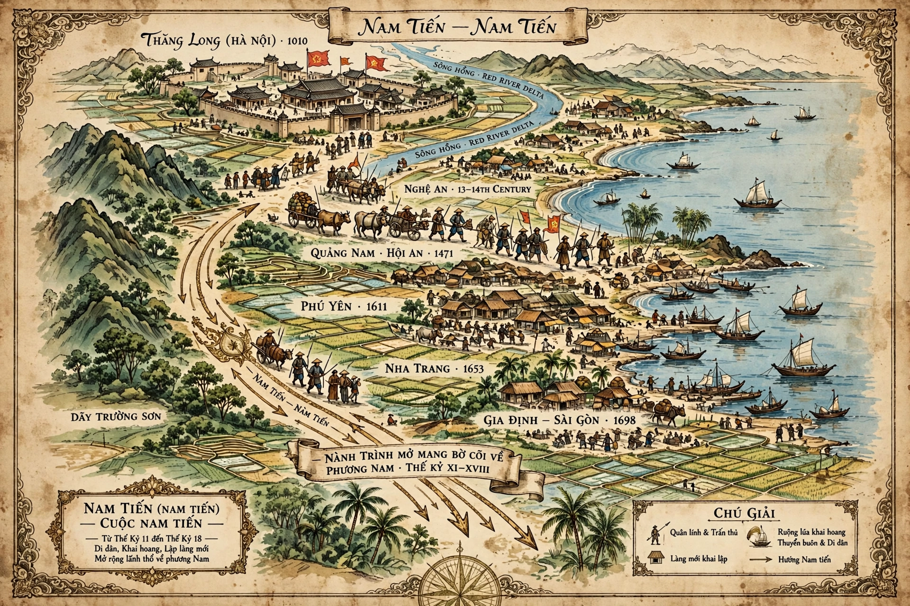

Nam tiến (Vietnamese: [naːm tǐən], chữ Hán: 南進, literally 'southward advance') is a term used by Vietnamese historians for the gradual southward territorial expansion of Vietnam between the 11th and 19th centuries, from the Red River Delta to the Mekong Delta, at the expense of Champa and Khmer territories.

| Period | 11th–19th centuries |
|---|---|
| Region | Central and southern Vietnam |
| Result | Vietnam reaches roughly its modern extent |
After independence from China, Đại Việt expanded south in stages: campaigns against Champa in 1069, 1471 (when Emperor Lê Thánh Tông destroyed Vijaya and annexed the north of Champa) and the 17th–18th centuries, when the Nguyễn lords progressively absorbed the remaining Cham principalities, ending Panduranga's autonomy in 1832. Vietnamese settlement also moved into the Mekong Delta, formerly Khmer (Kampuchea Krom), with Saigon taken in the late 17th century and Hà Tiên and the delta secured during the 18th century, formalised in part through diplomacy and military campaigns.
The expansion displaced and marginalised Cham and Khmer communities, reshaped Vietnam's long, S-shaped geography, and created enduring ethnic and territorial sensitivities. Vietnamese historiography has traditionally celebrated it as national unification and development; modern scholarship also examines it as colonisation.